Create an exploded assembly view
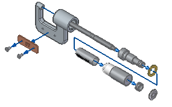
In the next few steps, create an exploded view of the assembly.

Choose Tools tab→Environs group→ERA .
The system displays menus and commands specifically tailored for creating exploded views, renderings, and animations of an assembly in the Solid Edge Explode-Render-Animate (ERA) application.
If the Explode PathFinder pane obscures the view, close it. It is not needed for this tutorial.
The Auto-Explode command (also referred to as the Automatic Explode command) explodes assemblies based on the relationships applied between parts. In assemblies where the components are positioned using mate or axial align relationships, the Automatic Explode command quickly gives excellent results.
Use the Automatic Explode command to begin defining the exploded assembly view.
Choose Home tab→Explode group→Auto Explode .
On the Automatic Explode command bar, ensure that the Select option is set to Top-level assembly.
On the command bar, click Accept .
When using the Automatic Explode command on an assembly that contains subassemblies, specify whether the parts in subassemblies are exploded or grouped together as a single unit.
For this assembly, explode the subassemblies also.
On the Automatic Explode command bar, click the Automatic Explode Options button .
On the Automatic Explode Options dialog box, clear the Bind all subassemblies option.
Clearing this option allows the parts in subassemblies to explode.
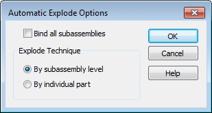
Also ensure the By subassembly level option is selected.
Click OK.
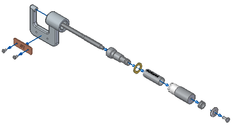
On the Auto Explode command bar, click Explode.
The system processes, and then displays the exploded view.
On the Auto Explode command bar, click Finish.
Notice that the display is good, but it would be easier to visualize the exploded view on a drawing sheet if the exploded view was more compact.
In the following steps, use other commands to adjust the positions of the parts within the exploded view.
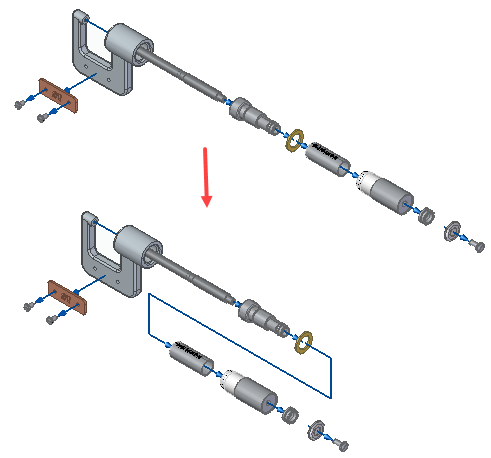
In the next few steps, use the Drag Component command to move the parts shown to reduce the space requirements of the exploded view.
First move the set of parts downward along the Z axis, then move the set of parts to the left along the X axis.
Use the Drag Component command to move one or more parts in an exploded view along a specified axis.
Choose Home tab→Modify group→Drag Component .
Examine the options on the Drag Component command bar.
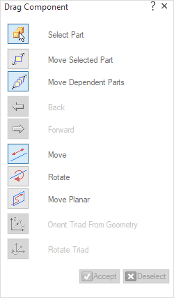
Use the Drag Component command bar to specify whether to move only the selected part, or the selected part and all its dependent parts.
You also specify whether to move the parts linearly, rotate the parts, or move the parts about a plane.
This command cannot be used to move a part past an adjacent part.
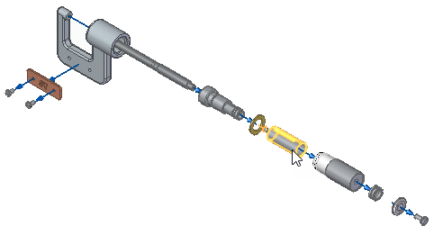
For this operation, move the parts as shown above.
On the Drag Component command bar, ensure the Move Dependent Parts option
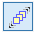
is set.On the Drag Component command bar, ensure the Move option
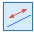
is set.Position the cursor over the Barrel1.par part, as shown above, and then select it.
Notice that all the parts to the right of the barrel are also selected.
On the Drag Component command bar, click Accept , or right-click.
As shown below, notice that a triad displays, with the X axis highlighted. When moving parts, the X axis is automatically aligned with the original explode vector for the selected parts.
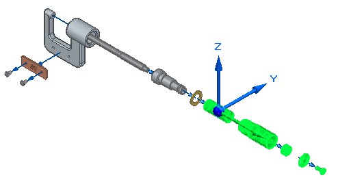
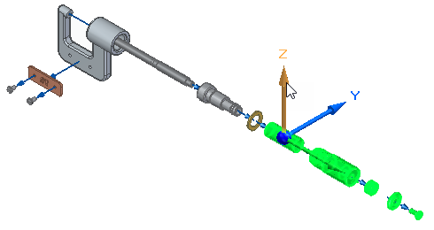
Position the cursor over the Z axis, then select the Z axis.
Press and hold the left mouse button down, then drag the cursor down as shown below, then release the mouse button to move the parts.
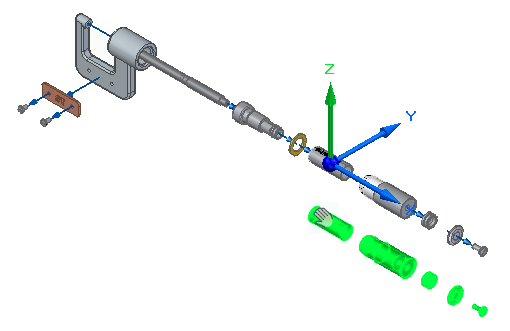
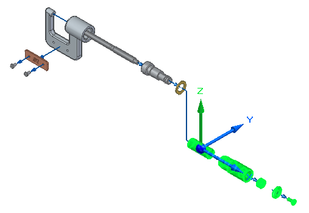
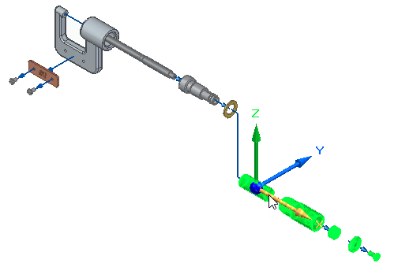
Position the cursor over the X axis, and then select the X axis.
Press and hold the left mouse button, then drag the cursor to the left as shown below, and release the mouse button to move the parts.
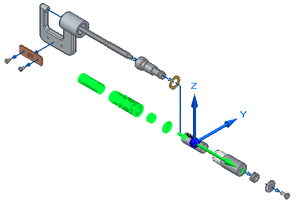
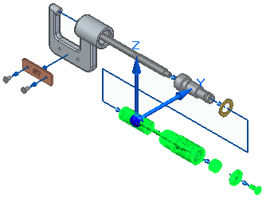
Right-click to clear the selection and restart the command.
-
Choose Fit
 to fit the contents of the view to the graphics window.
to fit the contents of the view to the graphics window.
To use this exploded view in an assembly animation or in an assembly drawing, save the display configuration.
Choose Home tab→Configurations group→Display Configurations.
The Display Configurations dialog box displays.
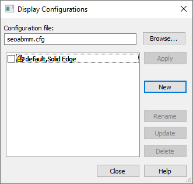
On the Display Configurations dialog box, click New, type EXPLODE1 as the name of the display configuration, and then click OK.
Click the Close button to dismiss the dialog box.
Because an exploded view configuration was saved, use the Unexplode command to return the assembly display to the assembled condition. This command is also useful when creating several exploded view configurations.
Choose Home tab→Modify group→Unexplode .
A dialog box displays warning that the exploded view will be deleted if no display configuration of the exploded view is saved.
On the dialog box, click Yes.
Choose Fit  to fit the contents of the view to the graphics window.
to fit the contents of the view to the graphics window.
Choose Home tab→Close group→Close ERA  to return to the main Assembly environment.
to return to the main Assembly environment.
On the Quick Access toolbar, choose Save  .
.
The assembly modeling portion of this tutorial is complete.
Although there are many more options available in the Assembly environment, you have learned the basic concepts required to build and explode assemblies in Solid Edge.